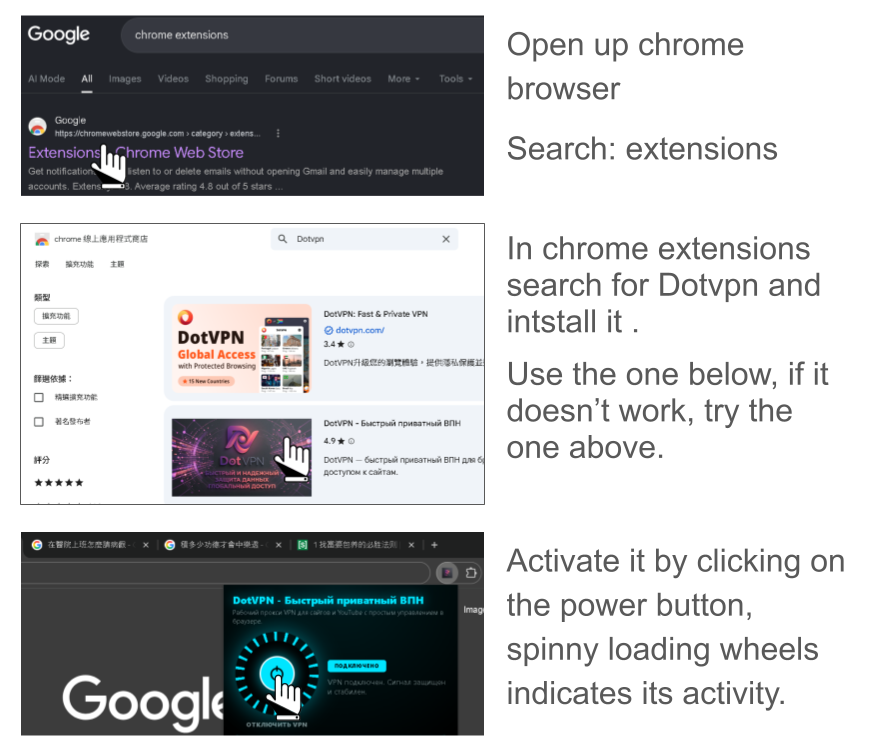
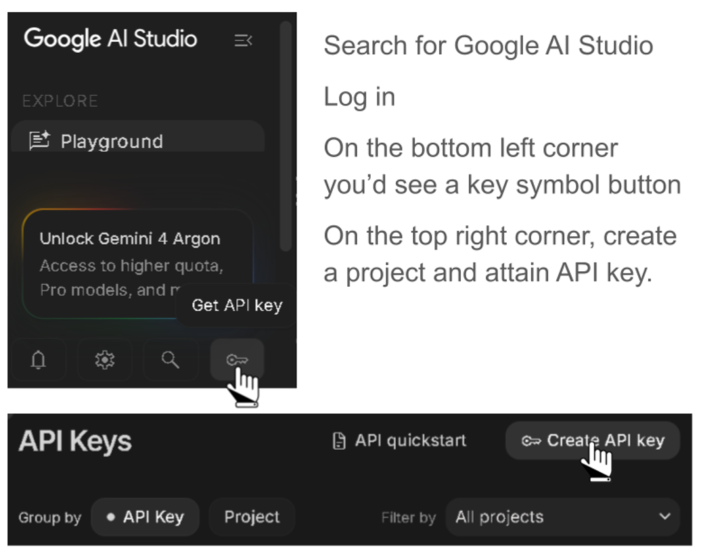
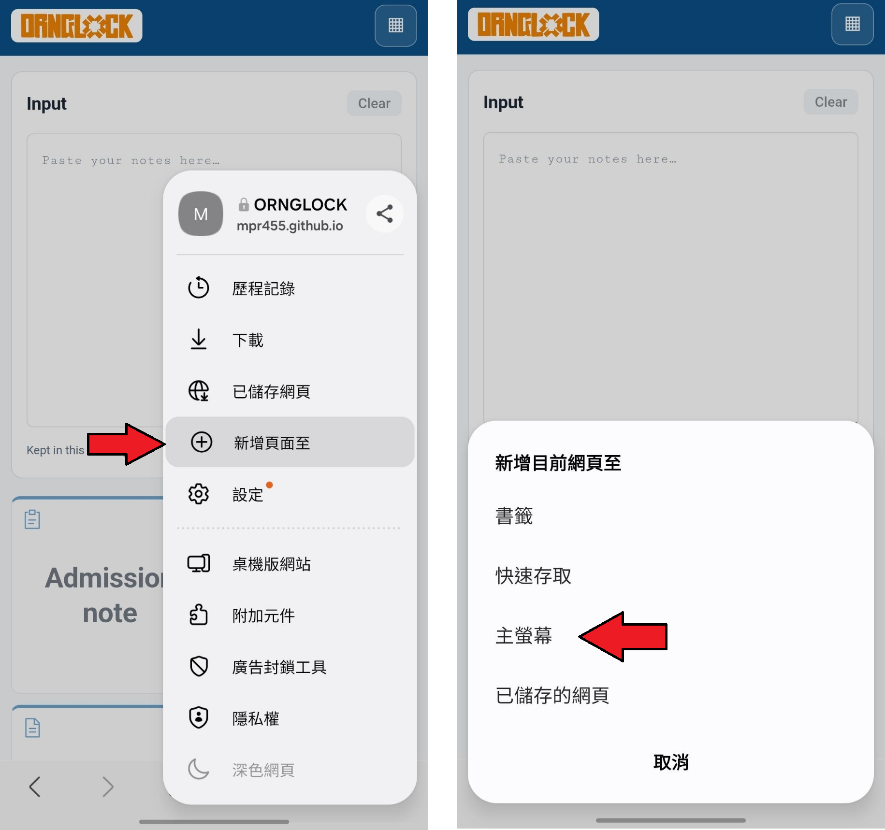
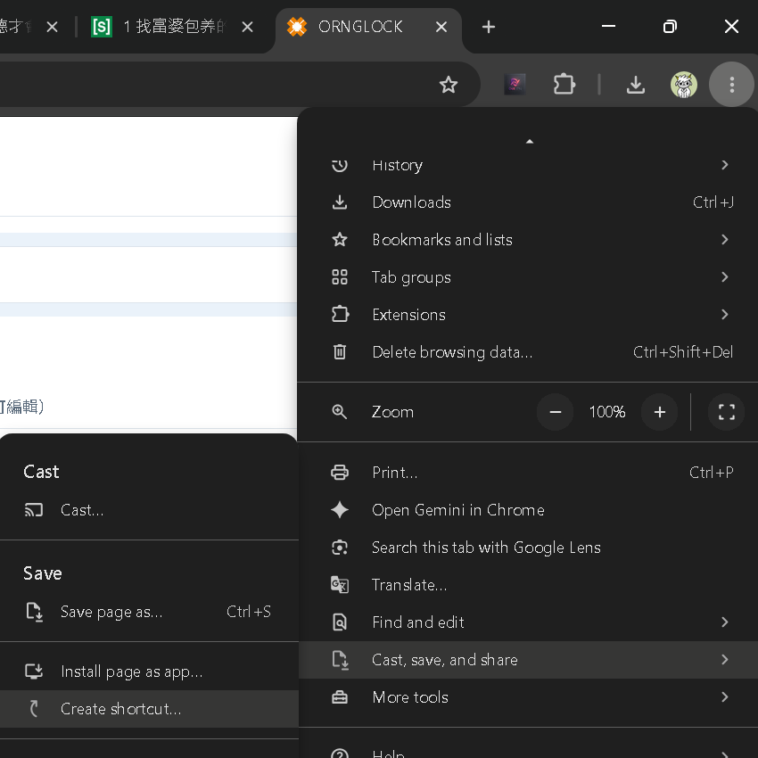

Welcome to Project ORNGLOCK VER 26.11-beta 2
Contact: 林揚修 cubeetor@gmail.com
首先聲明這是研發中的工具 不建議在任何情況下使用這個工具 使用產出都請自行承擔責任
1. 如何在橘色監獄使用該網站:
https://chromewebstore.google.com/category/extensions
在Chrome extension 上裝個VPN後啟用 即可連結外部網站
如果有更好的VPN 請告訴我

我也試過在別的web hosting上跑這個網站但都被橘色監獄擋住了
我會努力讓醫院whitelist這個小工具 但感覺有點玄 畢竟用了Gemini
如果用本地跑 最小的LLM model也要500MB-1.2GB 有點麻煩
謝醫師的實驗用文字整合工具模型基本院內電腦載不出來
下面會有一個本地版的(無AI工具)檔案供載
如果只是單純在首次生成完交班單後 想拿來當編輯器使用
由於目前經營這個網站都是用零成本的資源 所以有些用起來會有磕絆 (EX: VPN掉線時/太多人同時使用default API key時)
如果投入些錢錢可以做到本地化AI模型或買好一點的網域，但我的錢要拿去玩耍搜蕊
2.怎麼用交班單系統
我盡量讓使用介面極度友善 但首次使用可能對於如何載入Patient List會有點困惑，以下進行說明:
有五種方式可載入LIST
- 急診專用: 急診系統 > 病患滯留時間(查"滯留") > 點選觀察室或治療區 > 按查詢 > 按下載 就會獲得一個CSV檔 從匯入病人那邊可上傳CSV
- 住院系統: 住院系統 > 查你的老師 > 印List 那邊最下面會有一個用藥 (按下去可以選全部病人那個 會顯示全部病人名單跟現狀用藥) > 複製起來 貼進來
- AI 轉換其他人的交班筆記: 這個就是丟其他人的交班單上來就可以了 恩... 因為字元數比較多 可能會跑比較久 (15-30秒?)
- 手動新增病人
- 載入上次下載的交班單
如果已經有一個active載入的交班單 但病人換床位/要更新名單 也可以直接把新的名單貼上來 他會辨識患者身份自動更新床位/藥物 並保留原本的note
AI轉化note時如果患者身份不對 他會跳一個資訊不對 這是防止不小心載錯資料的情況。如果自己手key加入病人懶得打名字 就會比較容易遇到這個問題。這個時候只要把生成的note 第一行患者資料的部分刪掉就可套入 或直接複製起來貼上也可。
一些不這麼明顯的小功能:
- 用驚嘆號
!可標記重要需交班事情 左方"重要!"按鈕則可根據此sort - 用
{pending}(按鈕或用打的) 可標記待辦事項 左方"待辦事項" 可根據此sort 可以在那邊修改更新資料 打勾則會刪除{pending}並將該text block轉移到[O]底下 - 用
@會跳一個日期系統 標記Anti或手術日期用的, 這個好像有時候會有點卡 空格再@好像是比較穩定的方法 我猜應該是因為中文輸入法的@跟英文的有點出入 - 用
#或-前面會有六個點點 那個是有點像notion 有的textblock功能 可以拖跩他把整行字 跟其他做調整...恩...應該要再加個快速刪除整行的功能 有空再來加 - 鍵盤左上角的ESC Key 可跳出大部分的彈框 EX: 展開病人列表/AI note想縮小但又懶得摸到滑鼠 按ESC就好
有很多其他想法跟快捷想加入 但又怕做得太複雜反而只有我自己知道怎麼用 使用者各位如果有什麼想法 歡迎許願
AI tab:
Note convert 啥都可丟 ER note/ admission/ lab/ 檢查結果 之類的 都可以一起丟
Order: 可以整理告訴前面到底用什麼氧 run 什麼line之類的, 急診系統可以直接複製左下開醫囑那個欄位的資料丟上來
Data cleaning: 可丟data上來 怎麼丟應該都可以 複製門診格式應該比較方便 最快捷的方式應該是選取一個禮拜/一個月 之類的 從彙總那邊直接複製全部
貼上就會把比較重要的整理出來 如果是ㄧ些rhuema 或是血液科 有些比較專的檢驗項目 我只能說sorry 這個功能還在Beta 我還在調教他
如果有貴科常監測的檢驗項目 請再整理出來跟我說 會再進行更新
3.怎麼用病歷系統
PGY的好朋友 懂得都懂 你值得擁有
一般貼急診病歷不會帶有性別年齡 就自己整理前Key一下 EX: 89 Male/ 33 F 之類的
橘監的AI小助手應該也挺不錯了 (我不知道我沒用過 只是商業吹一下)
有鑑於Gemini這個模型比較小 我想避免錯誤診斷的部分 所以我沒有加上重新判讀/重新DD的功能
如果後續許多人反饋希望他更智能一點 會再加上DD 或 建議抽LAB/藥物review/檢查 的功能
4.怎麼用自己的API Key
我不知道有多少人會用這個工具 但如果整理功能真的比較卡了 可能是太多人同時使用的問題
可以用自己的API Key

5.電話簿怎麼用
用手機打開該網站，可快速檢索電話簿。點選號碼即可快速撥打電話，並會自動跳分機。
手機瀏覽器可將此網站釘選至桌面

6.怎麼把這個網站存到桌面呢
最好是先開一個新的chrome profile > 裝上VPN > 開啟本網頁 > 再建立捷徑
這樣每次打該都VPN都是ready to go

醫院的chrome應該是中文的 但我相信各位沒問題
7. 合作與後續發展
我原本是希望能再延伸做更多協助PGY/R 實際應用上可以自動化的工具
幫助老人節省時間 減少新人陣痛期
一些情慶該有的處置/survey/如何開單 等等一個綜合工作手冊/引導系統
遇到下列問題:
資料很多 清理要花時間 蒐集了很多工作手冊/上百份教學檔案，轉化成能快速指引PGY怎麼開order/處理所有常見臨床狀況的database跟UI 需要點時間消化資料。甚至很多工作手冊都過期了、有些功能也因系統更新改變了、以及各科各station的習慣我沒能很精細的紀載掌握
我怕自己學藝不精提供錯誤指引 如果有想走各科或有自製筆記的朋友 如果能提供各科的topic教學處理原則/flowchart (臨床困境/PE/Survey/Treatment) 或許可以造福學弟妹 或賣錢分成，有想法歡迎聯絡我，後續應該會再開拓一個交流版供大家丟上自己的疑問。 沒有問題是蠢問題，能從中學習進步才是重要的!
行政上的很所瑣事 如排班/數據整理/研究data收案/圖表呈現..etc 等也都是可以自動化。當你有一個"啊每次都要做這個好麻煩 我在做這個是因為我太窮被壓榨嗎"的時候 理論上就是需要自動化的。由於我不是資工專業+院內電腦諸多限制，即便有AI降低了門檻還需再慢慢學習。
分享給大家只是希望大家方便，沒有特別考慮過用他來賺錢。
如果發現使用率上升且反響極佳，可能會做出發行版的、並考慮架設完善一點的資訊保護架構。如果成為日常使用的好幫手，一個月請我喝幾杯飲料不過分吧?
或是拿去賣? 感覺現在逆向工程這麼強，一下就會被抄走，可憐。或是看看有沒有經費買單繼續做小工具改善大家的工作跟照護品質吧。
8. 如果VPN被封了怎麼辦
涼拌 我目前的能力也沒什麼辦法
頂多做出個本地版 不用AI的
如果我有權限有錢應該可以不用這樣當資安老鼠 可我沒有 :(